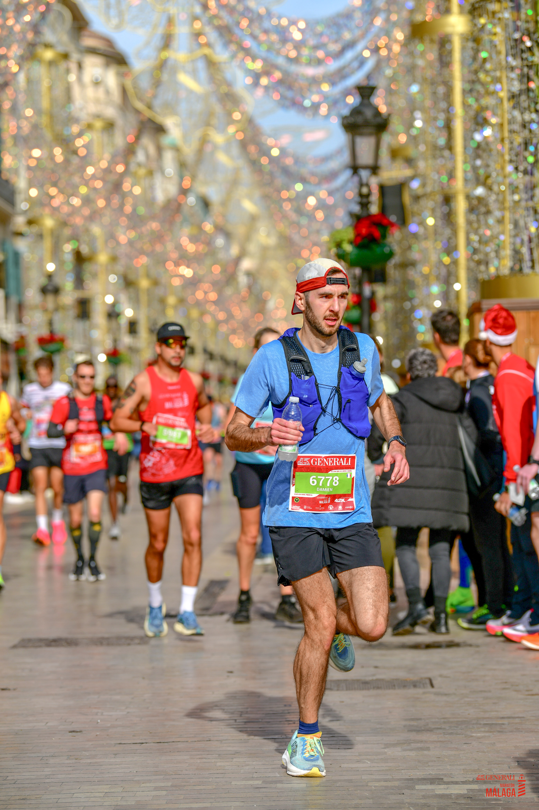

Damien Running Coach

Are you new to running or looking to improve your performance up to the marathon distance? I'm here to guide and support you every step of the way. As a passionate running coach, I specialize in helping beginner and intermediate runners build confidence, stay motivated, and reach their personal goals—whether it’s completing your first 5K or crossing the finish line of a marathon.
🏃 Personalized Training Plans
Tailored for your pace and schedule. 5K, 10K, Half, or Marathon.
🧠 Motivation & Mindset
Stay focused, overcome setbacks, and build long-term discipline.
📩 Weekly Tips
Nutrition, gear, recovery — direct to your inbox.